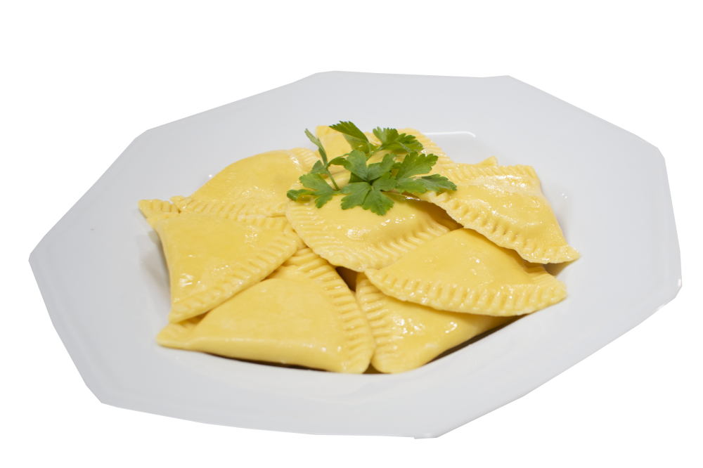
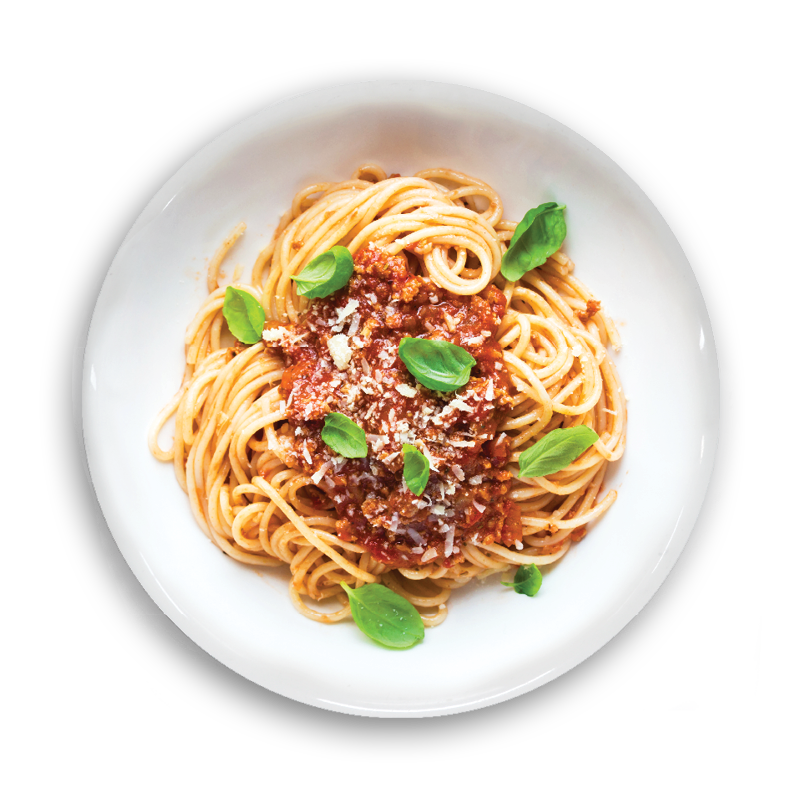
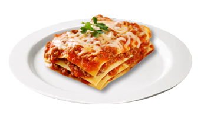
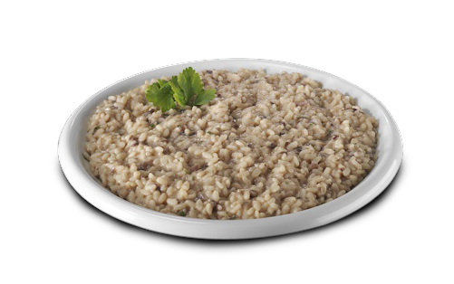
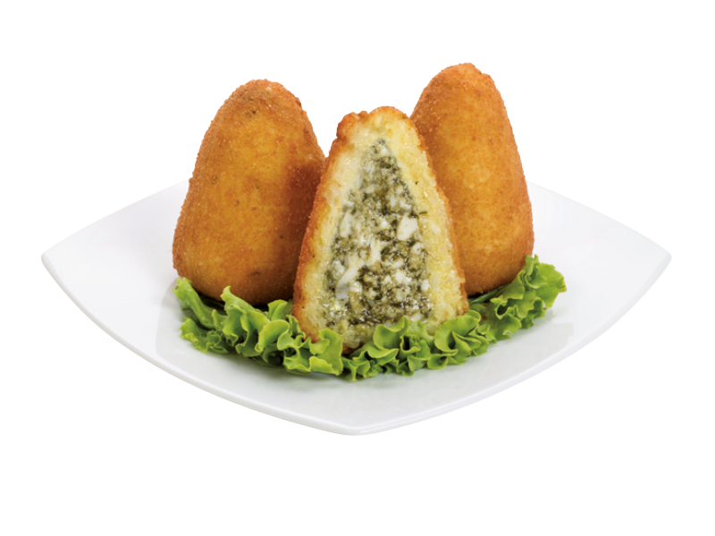
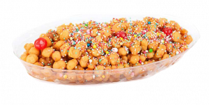

Ravioli

O Ravioli é uma das comidas típicas da Itália que temos o
costume de comer no Brasil. São mini pastéis recheados com
diversos ingredientes. São cozidos e a massa é feita de ovo e
farinha de trigo. Esse prato foi criado na Sicília, no sul da
Itália, no século XII. Inicialmente o ravioli não era recheado,
mas depois foi ganhando outras formas e recheios, como ervas,
queijos e carnes.
Peça Online
Spaghetti

O Spaghetti é outro prato italiano amado pelos brasileiros. Ele
pode ser servido com diversos molhos diferentes, mas o mais
comum é Ragú (molho vermelho com carne moída). É conhecido como
uma das comidas típicas da Itália e é um dos pratos mais
consumidos pelos italianos. Para poder provar um bom spaghetti
na Itália, procure restaurantes especializados em massas ou
trattorias.
Peça Online
Lasagna

Mais um prato adorado pelos brasileiros. A Lasagna é uma das
comidas típicas da Itália mais antigas. Alguns livros dizem que
a origem do prato pode ser grega ou inglesa, mas certamente foi
a Itália que aprimorou a receita. A lasagna tradicional é feita
com molho de carne moída (ragú), porém existem diversas outras
versões deliciosas. Para comer uma boa lasagna na Itália,
procure os restaurantes populares.
Peça Online
Risotto

O risoto é uma das comidas típicas italianas com mais variação
de ingredientes. Ele surgiu no norte da Itália, no século XI, e
é feito com um arroz especial, que dá um aspecto mais cremoso ao
prato. O mais famoso é o risotto milanês, que surgiu em 1574 em
Milão, através de uma “pegadinha” feita de um estudante com o
seu professor. O estudante subornou o cozinheiro (responsável
pelo banquete do casamento da filha do professor) para que ele
colocasse açafrão no risotto.
Peça Online
Bucatini all’amatriciana

Prato típico de Amatrice, cidade da região central da Itália, é
super tradicional. O bucatini é um tipo de massa longa com um
buraco no meio, que parece um spaghetti grosso. O molho é a base
de tomates, guanciale (tipo um bacon feito com a bochecha do
porco) e queijo pecorino. Melhor impossível!
Peça Online
Arancino

é o bolinho de arroz italiano. Prato típico da Sicília, é um
bolinho de risotto, recheado normalmente com molho vermelho de
carne e queijo, empanado com uma massa de farinha e água
(pastella) e frito. É delicioso e pode ser recheado de presunto
e queijo, entre outros sabores. Tem esse nome por causa do
formato que lembra uma laranjinha (arancia em italiano é
laranja).
Peça Online
Cotoletta alla milanese

É um bife de bisteca de vitelo, obviamente com osso, empanado e
frito na manteiga. Prato típico da região da Lombardia, a
cotoletta alla milanese é servida com batatas assadas e rodelas
de limão. É muito gostoso, mas bem diferente do bife a milanesa
que conhecemos, até porque, esse bifinho empanado, de italiano
só tem o nome, já que é uma criação da culinária de imigração
ítalo-argentina.
Peça Online
Struffoli

Essa é uma das comidas típicas da Itália que não é muito
conhecida. Trata-se de um doce feito no Natal, principalmente em
Nápoles. É frito e leva uma cobertura de mel e confetes
coloridos. Sua origem é um pouco desconhecida, sendo que alguns
relatos dizem ser da Grécia e outros dizem que é realmente
italiano.
Peça Online
Tiramisù

Sobremesa italiana super conhecida e tradicional a base de
chocolate, café, biscoito e creme de mascarpone. Esse prato é
delicioso e seu nome deriva da palavra italiana “tirami sù”, que
significa “puxa-me para cima”. A origem do Tiramisù é disputada,
e até existe uma disputa entre o Veneto, Friulli-Venezia Giulia
e a Toscana pela maternidade do doce. Foi criado no final do
século XVI em homenagem a Cosme III de Médicis (duque da Toscana
na época), por pasteleiros em Siena, para festejar a sua
chegada. Entretanto, dizem as más línguas que é porque o doce é
afrodisíaco.
Peça Online